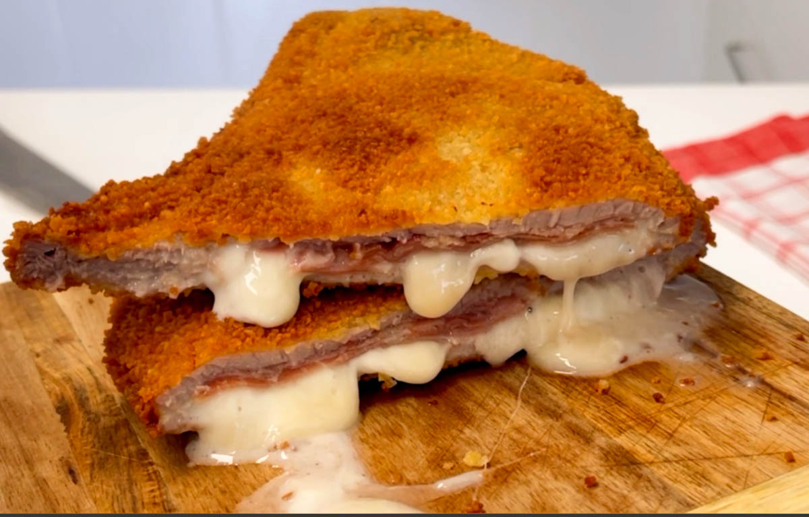

Cachopo casero
Ingredientes
- 4 filetes finos de ternera
- 8 lonchas de jamón serrano
- 8 lonchas de queso
- 2 huevos
- Pan rallado
- Harina
- Aceite para freír y sal

Pasos a seguir
- Sala los filetes y colócalos extendidos sobre la encimera.
- Pon sobre cada filete lonchas de jamón y de queso.
- Tapa con otro filete y sella los bordes con ayuda de palillos.
- Pasa el cachopo por harina, huevo batido y pan rallado.
- Fríelo en aceite caliente unos 5 minutos por cada lado.
- Escúrrelo sobre papel absorbente y sírvelo caliente.
Descargar la receta en PDF
Volver al menú principal del Restaurante